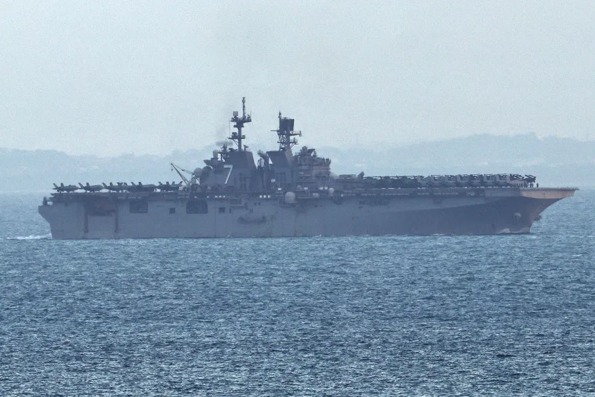

US Warship Carrying Marines Tracked Off Singapore Toward Middle East


We have been following the latest developments in the Middle East, where a US warship carrying Marines has been tracked off Singapore. The USS Tripoli, an amphibious assault ship, has been making its way toward the Middle East, carrying the 31st Marine Expeditionary Unit (MEU) with approximately 2200 Marines on board. This deployment is part of a larger effort by the US Navy to reinforce its presence in the region, amid rising tensions with Iran. In this article, we will take a closer look at the USS Tripoli's journey, its capabilities, and the implications of this deployment.
Table of Contents
Introduction to the USS Tripoli
The USS Tripoli is an amphibious assault ship, designed to carry out a variety of missions, including amphibious assaults, humanitarian assistance, and disaster response. The ship is equipped with state-of-the-art technology, including F-35 stealth fighters and MV-22 Osprey tiltrotor aircraft. The USS Tripoli is also part of an amphibious ready group, which includes the USS New Orleans and the USS San Diego. This group is capable of carrying out a range of missions, from amphibious assaults to humanitarian assistance.
The Journey to the Middle East
The USS Tripoli departed from Okinawa on March 11, 2026, and has been making its way toward the Middle East. The ship has been tracked through the Malacca Strait, off the coast of Singapore, and is expected to transit the Suez Canal in the coming days. The journey is part of a larger effort by the US Navy to reinforce its presence in the region, amid rising tensions with Iran. The US has already deployed approximately 50,000 troops to the Middle East, and the USS Tripoli's deployment is seen as a significant addition to this force.
RECOMMENDED FOR YOU
Check out more tech articles here →The USS Tripoli's deployment is also seen as a key component of Operation Epic Fury, a US military operation aimed at countering Iranian influence in the region. The ship's capabilities, including its F-35 stealth fighters and MV-22 Osprey tiltrotor aircraft, make it an ideal platform for this type of operation.
Capabilities of the USS Tripoli
The USS Tripoli is an extremely capable ship, with a range of advanced technology and equipment on board. The ship is equipped with:
| Capability | Description |
|---|---|
| F-35 Stealth Fighters | The USS Tripoli is equipped with F-35 stealth fighters, which provide advanced air combat capabilities. |
| MV-22 Osprey Tiltrotor Aircraft | The ship is also equipped with MV-22 Osprey tiltrotor aircraft, which provide advanced transport and assault capabilities. |
| Amphibious Assault Capabilities | The USS Tripoli is designed to carry out amphibious assaults, with the ability to launch landing craft and troops from its well deck. |
These capabilities make the USS Tripoli an extremely versatile ship, capable of carrying out a range of missions in the Middle East and beyond.
As we watch the USS Tripoli make its way toward the Middle East, it's clear that this deployment is a significant development in the region. The ship's capabilities, combined with the 31st MEU's ground combat and air combat elements, make it a formidable force. - US Navy spokesperson
Implications of the Deployment
The USS Tripoli's deployment to the Middle East has significant implications for the region. The ship's capabilities, combined with the 31st MEU's ground combat and air combat elements, make it a formidable force. The deployment is also seen as a demonstration of the US commitment to its allies in the region, and a warning to Iran that the US is prepared to defend its interests.
According to AIS tracking data, the USS Tripoli has been tracked off Singapore, and is expected to arrive in the Middle East in the coming days. The ship's deployment is part of a larger effort by the US Navy to reinforce its presence in the region, amid rising tensions with Iran.
Conclusion
In conclusion, the USS Tripoli's deployment to the Middle East is a significant development in the region. The ship's capabilities, combined with the 31st MEU's ground combat and air combat elements, make it a formidable force. As we watch the USS Tripoli make its way toward the Middle East, it's clear that this deployment is a demonstration of the US commitment to its allies in the region, and a warning to Iran that the US is prepared to defend its interests.
Ultimate Schooling Editorial Team
Expert tech education content delivered daily.
Leave a Comment